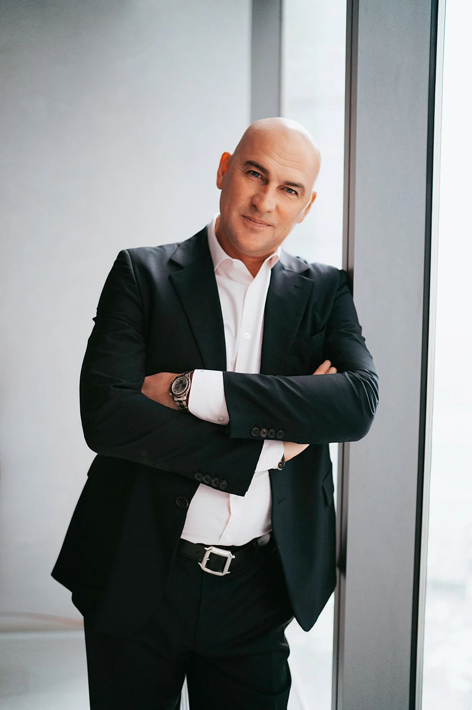
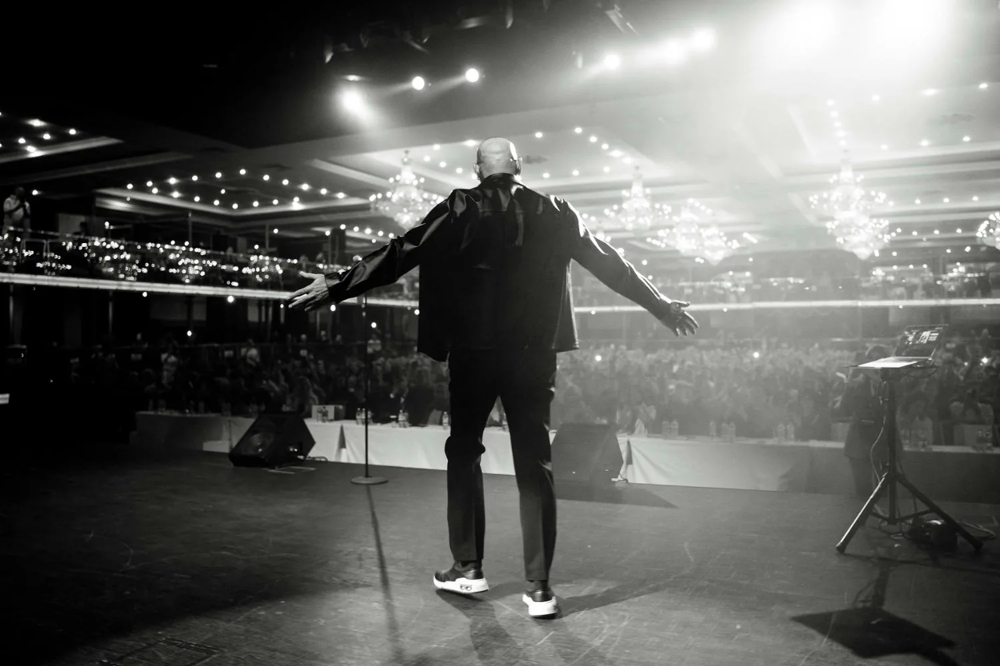
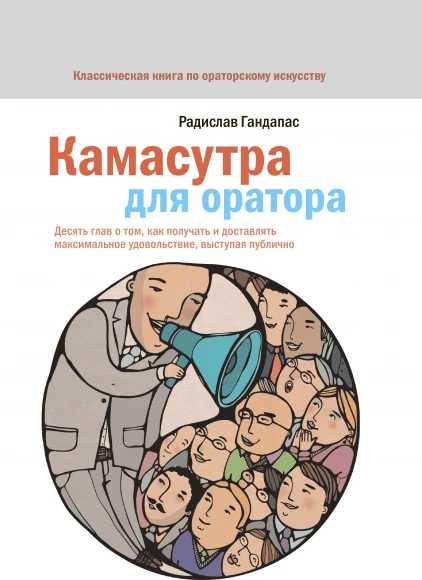
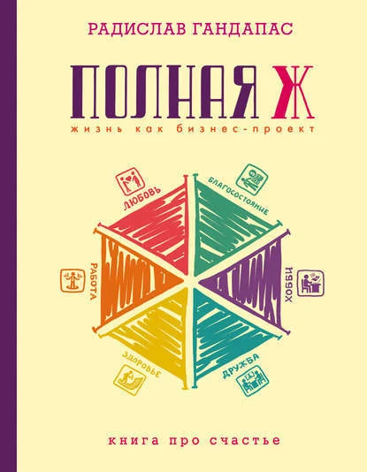
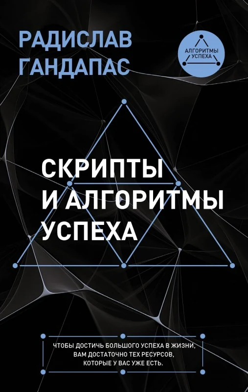
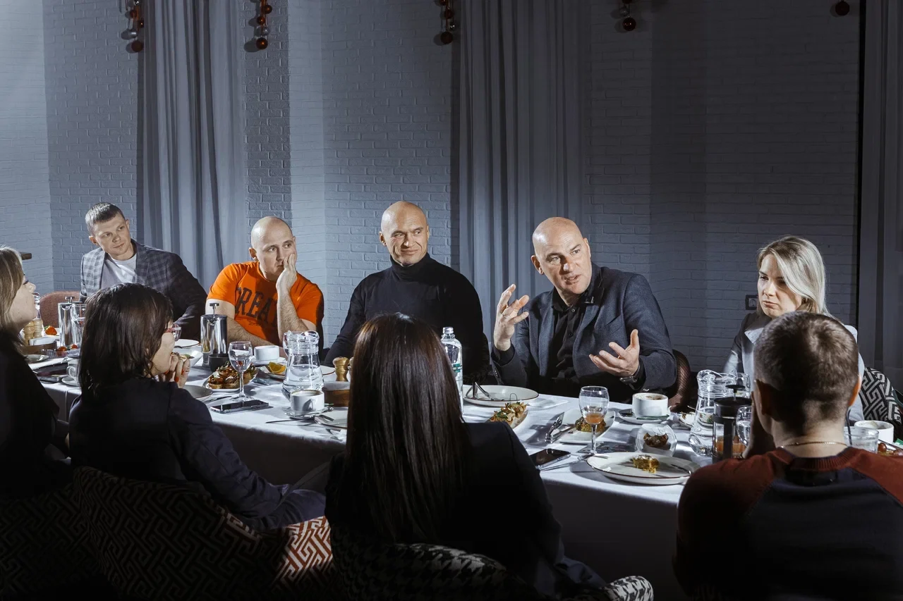
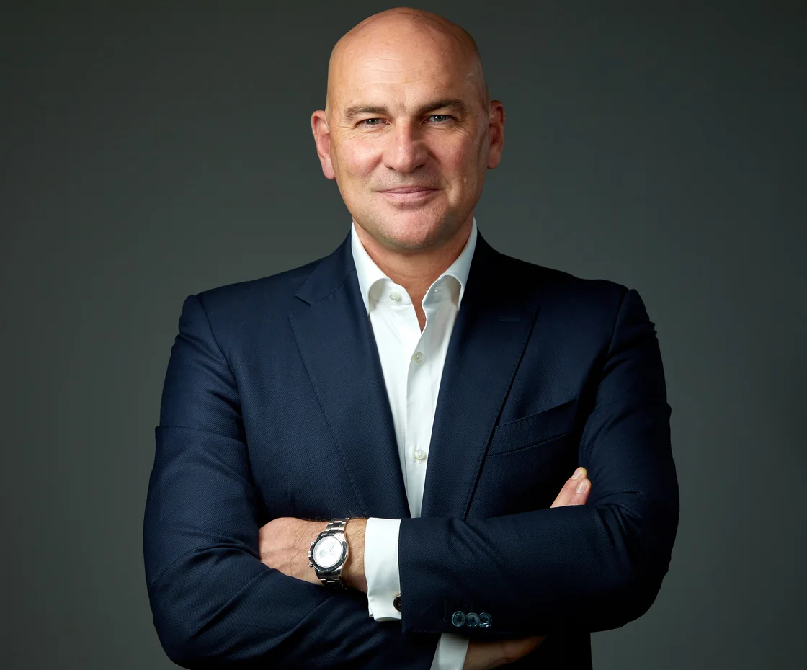

Тренинг
7 августа
МоскваТридцать лет развиваю лидеров и команды — от предпринимателей до топ-менеджмента крупнейших компаний. Учу выступать убедительно, вести за собой людей и принимать решения, когда нет готовых ответов. На сцене с 1996 года, провел больше 1200 тренингов.


В неопределенности именно умение выбирать быстро и точно отличает сильного руководителя. Не случайно этот навык который год в топе Давосского форума.
За один день тренинга разберем, как работать с информацией, обходить ловушки мышления и подключать не только логику, но и интуицию.
Мастер-класс — это два-три часа на одну тему. Разбираем конкретный вопрос и сразу внедряем знания. Формат для тех, кто хочет взять конкретный инструмент и с ним же сразу выйти в работу. Провожу очно в разных городах и онлайн.
Тренинг — это полное погружение в тему с отработкой на практике. Один или два дня, очно или онлайн. Здесь мы не просто разбираем инструменты, а доводим их до навыка на совместной работе в зале.
Каждый год Давосский форум публикует ТОП-10 навыков будущего. Список меняется, но несколько навыков остаются в нём десятилетиями — и один из них умение принимать решения быстро и точно.
Что в программе
Формат. Тренинг пластичен — от 3 до 6 часов. Участники решают кейсы, разбирают собственные ситуации и принимают реальные решения прямо в зале.
Скачать программу (PDF)Где и когда выступаю в ближайшее время. Выбирайте формат и город.
Провожу тренинги, стратегические сессии и выступления для топ-менеджмента и компаний. Работаю с тем, что напрямую влияет на результат бизнеса: с устойчивостью руководителей, качеством решений и готовностью команды действовать, когда вокруг все меняется. Сегодня власть в бизнесе строится на новых основаниях, и менять стиль руководства приходится на опережение.
Для вашей компании адаптирую любую программу мастер-класса или тренинга.
Обсудить программу для компанииИндивидуальный формат для тех, кто готов вкладываться в себя всерьез. Шесть встреч по полтора часа за полгода, очно или онлайн. Вместе ставим цели, выстраиваем стратегию, принимаем важные решения и пересобираем главные сферы вашей жизни. На персональную работу беру после короткого онлайн-собеседования — мне важно, чтобы формат подошел именно вам.
Отправить заявку на собеседованиеКаждую неделю разбираю вопросы про лидерство, коммуникацию и управление собой — от сугубо рабочих до совсем личных. А еще зову в гости людей, с которыми интересно спорить: в подкасте уже были Оскар Хартманн, Маргулан Сейсембаев, Олег Торбосов, Михаил Гребенюк, Максим Спиридонов, Сергей Полонский, Татьяна Мужицкая, Павел Андреев, Александр Цыпкин и другие. Слушайте на удобной площадке.
Документальное кино — моя страсть, а идею этого сериала я вынашивал семь лет. «Здесь жил великий…» — про дома и квартиры великих: где они мечтали и работали, любили и страдали, задумывали свои свершения. Я ищу то, что сделало этих людей великими, и то, что каждый из нас может перенести в собственную жизнь.
Пишу про лидерство и публичные выступления, показываю закулисье тренингов и съемок, отвечаю на ваши вопросы и делюсь тем, что кажется мне важным. Заходите!
Подписаться @radislavgandapascomЯ написал 14 книг о публичных выступлениях, лидерстве, управлении собой и личных финансах. Первая, «Камасутра для оратора», вышла двадцать лет назад и до сих пор остается самой продаваемой книгой об ораторском искусстве на русском языке, она издана на семи языках. Потом были книги про лидерство, управление собой и личные финансы.



Закрытое пространство для тех, кто управляет собой. Я провожу прямые эфиры, разбираю ваши ситуации и зову экспертов, которые делятся технологиями из первых рук. А еще здесь вы знакомитесь с людьми своего уровня. Иногда одно такое знакомство меняет больше, чем год работы в одиночку.

Радислав Гандапас — эксперт по лидерству и публичным выступлениям, советник и консультант руководителей крупнейших компаний, президент Ассоциации спикеров СНГ.
Автор 14 книг по лидерству, ораторскому искусству и управлению собой. С 1996 года провел больше 1200 тренингов. Среди клиентов — руководители РЖД, Сбера, Сибура, Норникеля.

Эксперт по лидерству и публичным выступлениям, советник и консультант руководителей крупнейших компаний, президент Ассоциации спикеров СНГ, автор 14 книг. Провел больше 1200 тренингов с 1996 года, входит в TOP-30 Global Gurus.
Зависит от формата, продолжительности и города. Напишите в WhatsApp или на mail@radislavgandapas.com — обсудим.
Мастер-класс — это два-три часа на одну тему, чтобы быстро освоить конкретный инструмент. Тренинг — это один или два дня глубокой работы, когда знания становятся навыками прямо в зале.
Провожу очно в Москве, Санкт-Петербурге, Ташкенте, Казани и других городах, а часть программ — онлайн. Ближайшие даты собраны в расписании.
Да. Провожу тренинги, стратегические сессии и выступления для топ-менеджмента и компаний. Программу собираю под задачу. Чтобы обсудить выступление, напишите в WhatsApp.
Можно. Это шесть встреч по полтора часа за полгода, очно или онлайн. Беру после короткого онлайн-собеседования. Заполните анкету, чтобы записаться.
Напишите в WhatsApp, если нужно обучить команду.
Про лидерство, выступления и управление собой.